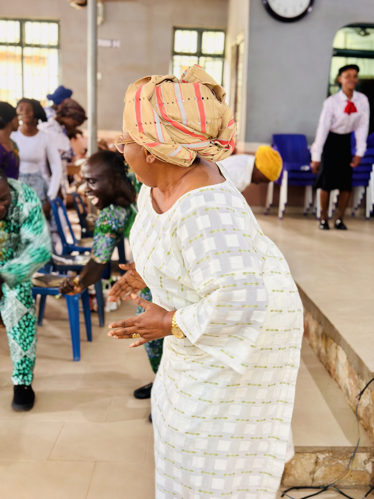
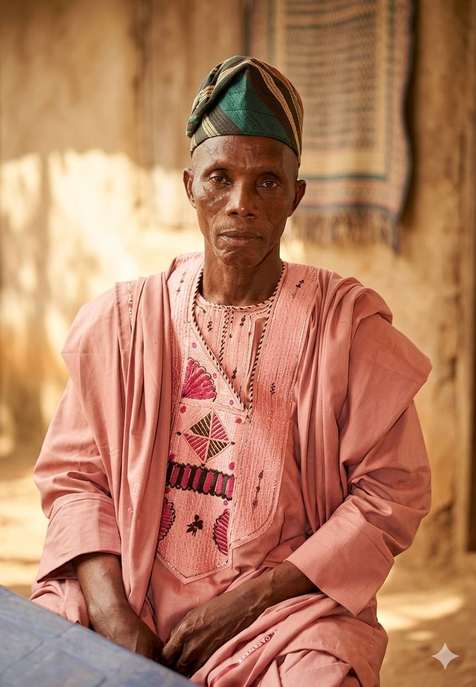

EST. JUNE 6, 2004 • ABEOKUTA, NIGERIA
About The Coming King Ministries
"To Prepare Saints for the Coming King"
The Story of Grace
The Coming King Ministries was founded on 6th June 2004 by the Late Apostle Daniel Olaide Olabosipo Olatoye O. Daniel, a devoted servant of God, divinely commissioned to proclaim the Gospel of Jesus Christ to mankind and prepare souls for the Second Coming of our Lord Jesus Christ. The Ministry is evangelical in nature; hence, its church arm is known as The Coming King Evangelical Church. From its humble beginning, God has graciously sustained and expanded the Ministry, leading to remarkable growth and spiritual impact.
To the glory of God, the Ministry has grown from its Headquarters Church located at Olorunsogo, Idi-Aba, Abeokuta to three Administrative Areas, namely: Abeokuta Area, Ijebu Area, and Ibadan Area. Through these Areas and their various Parishes or Centres, the Gospel continues to reach many souls across different communities. In addition to its church ministry, The Coming King Ministries operates a Publishing Department, which produces and distributes Sunday Bible School lessons for spiritual growth and discipleship. The Ministry also runs a Broadcast Ministry known as "And the Word Was God", through which the message of salvation, holiness, revival, restoration and the Kingdom of God is proclaimed to a wider audience through Rockcity 101.9 FM and Family 88.5 FM, Abeokuta.
Over the years, these ministries have made significant spiritual impacts within the Body of Christ, across Nigeria, and in other parts of the world, contributing to the advancement of God's Kingdom and the preparation of believers for the return of Christ. Following the glorious transition of the Founder, Late Apostle Olatoye O. Daniel, in April 2024, the leadership of The Coming King Ministries was entrusted to Pastor Akinboye Michael, who now serves as the General Overseer. By the grace of God, the Ministry continues to experience steady growth and expansion under his leadership, while faithfully upholding its core mandate of evangelism, discipleship, sound biblical doctrine, and preparing believers for the imminent return of our Lord Jesus Christ.

Key Milestones
Our Mission
Our mission is clear: To Prepare Saints for the Coming King, equipping believers with the truth of the Word of God so that our Lord Jesus Christ may meet a glorious Church without spot or wrinkle. We believe in the power of the Holy Spirit, holiness, and evangelism.
Whether you are seeking the truth of the Word of God or a believer looking for a spiritual home, you are welcome here. Let us walk this path of righteousness together with our Saviour and Lord, Jesus Christ.
How We Serve
Our ministry operates through three primary arms, each fulfilling a distinct aspect of our divine mandate.
Church Ministry
The Coming King Evangelical Church operates from its Headquarters at Olorunsogo, Idi-Aba, Abeokuta, with branches across 3 administrative areas and 12+ parishes serving communities throughout Ogun and Oyo States.
Publishing Department
Our Publishing Department produces and distributes Sunday Bible School lessons for spiritual growth, discipleship, and the equipping of the saints with sound biblical teaching across all our branches and beyond.
Broadcast Ministry
"And the Word Was God" - our broadcast arm proclaims salvation, holiness, revival, restoration, and the Kingdom of God through Rockcity 101.9 FM and Family 88.5 FM, Abeokuta, reaching thousands of listeners.
Administrative Areas
The Ministry is structured into three Administrative Areas, each overseeing multiple parishes and centres.
Abeokuta Area
Covering parishes in Abeokuta and its environs. Led by Pastor Okewale A. Isaiah as Area Pastor.

Ijebu Area
Covering parishes in Ijebu Igbo and its environs. Led by Pastor Samuel O. Olatoye as Ijebu Area Pastor.
Ibadan Area
Covering parishes in Ibadan and its environs. Led by Pastor Samuel Olorundare.